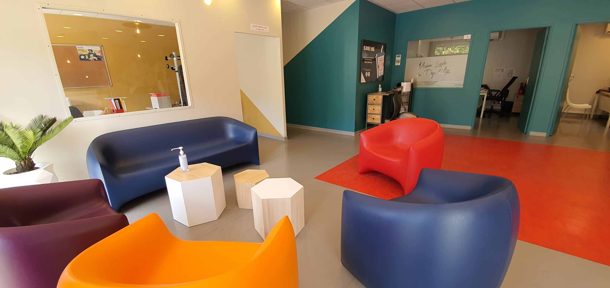
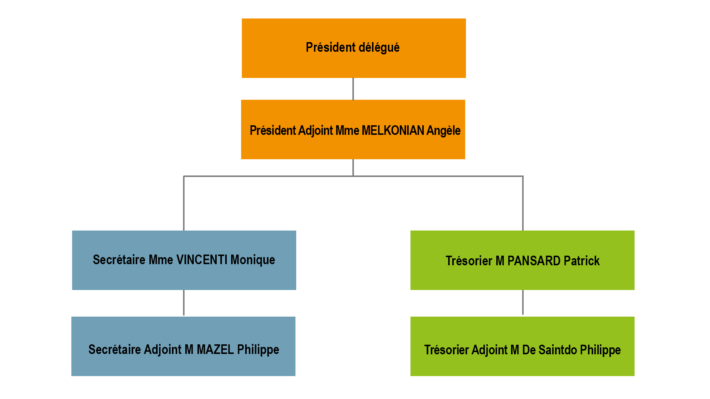

L'Activité de la Mission Locale
L'association Mission Locale du Pays d'Aix a pour objectif de favoriser l'insertion sociale et professionnelle des jeunes de 16 à 25 ans révolus des communes du territoire de Pays d'Aix-en-Provence, dans le cadre d'une mission de service public de proximité et en respectant les textes légaux et réglementaires en vigueur (articles L5314-1 et suivants du Code du Travail et leurs décrets d'application).
L'activité de la Mission Locale d'Aix-en-Provence est définie par les financeurs à travers la transmission d'éléments probants et factuels qui retracent l'accomplissement d'indicateurs, d'objectifs et d'obligations :
La Convention Pluriannuelle d'Objectifs (CPO) pour l'État
Le Plan Annuel d'Objectifs (PAO) pour la région
Le Plan d'Action Ville (PAV) pour la Ville
Autres intermédiaires selon le type de projet en cours : Fonds Social Européen, Fonds de solidarités, Mécénats, etc.
Les ressources de l'association comprennent :
- Les subventions accordées par l'État, les Collectivités Territoriales, le Conseil des territoires du Pays d'Aix (Ville d'Aix-en-Provence), la métropole Aix-Marseille, l'Union Européenne, le Conseil Régional, le Conseil départemental ou tout autre organisme ou personnes morales de droit privé ou public.
- La participation des communes adhérentes.
- Les intérêts et revenus des biens et valeurs appartenant à l'association.
- Les contributions diverses qu'elle pourrait obtenir.
- Les dons et legs qui lui seraient faits.
- Les produits autorisés de l'activité de l'association.
- Toutes les ressources autorisées par la loi.
Rôle de la Mission Locale
Véritable levier et actrice de premier ordre du développement local, la Mission Locale du Pays d'Aix contribue à l'élaboration et à la mise en œuvre de politiques d'insertion professionnelle et sociale. Pour cela, elle mobilise les moyens des diverses administrations et institutions concernées, ainsi que de l'ensemble de ses partenaires, sur l'ensemble du territoire d'intervention.
La Mission Locale propose des permanences et des antennes dans 34 communes du Pays d'Aix actuellement.
Gouvernance
Composition de l'association
L'association se compose des communes adhérentes du Pays d'Aix et des membres des quatre collèges du Conseil d'administration :
Collège des Collectivités Territoriales
Regroupement de Collectivités Territoriales
Collège des Services de l'État et des Organismes Publics
Collège des Partenaires Économiques et Sociaux
Collège des Associations
Présidence
Madame JOISSAINS-MASINI Maryse, Maire d'Aix-en-Provence, est la présidente de droit de la Mission Locale du Pays d'Aix. Elle peut déléguer cette présidence à une personnalité de son choix, désignée parmi les membres du Conseil d'Administration. Actuellement, la délégation en cours nomme Monsieur CHEVALIER Éric, Président délégué de la Mission Locale du Pays d'Aix.
Monsieur CHEVALIER Éric, 13e adjoint au Maire et à la Ville d'Aix-en-Provence, occupe les fonctions d'élu en tant que 13e adjoint au Maire de la ville d'Aix-en-Provence, délégué aux quartiers du Pont de l'Arc et du Val Saint-André-Arc-La Torse.
Composition du Bureau
Le Bureau est constitué de personnes qualifiées :
Collèges du Conseil d'administration
Collège des Collectivités Territoriales (représentants·es)
- Six représentants·es de la Ville d'Aix-en-Provence
- Six représentants·es des Communes Adhérentes
- Deux représentants·es de la Métropole Aix-Marseille
- Un·e représentant·e du Conseil Départemental
- Un·e représentant·e de la Région Sud
Collège des Services de l'État et des Organismes Publics
- Monsieur le Sous-Préfet ou son·sa représentant·e
- Un·e représentant·e de la délégation départementale de Pôle Emploi
- Un·e représentant·e de la DPJJ-Direction de la Protection Judiciaire de la Jeunesse
- Deux représentants·es de la DREETS-Direction Régionale de l'Emploi, de l'Économie du Travail et des Solidarités
- Un·e représentant·e de l'inspection Académique - Éducation Nationale
Collège des Partenaires Économiques et Sociaux
- École ESG Aix-en-Provence
- Vice Présidence CCIFA
- Société MGB
- Proxidom Services
Collège des Associations
- DUNES Association de Prévention et de médiation
- ACCES Multimedia
- AMS Environnement